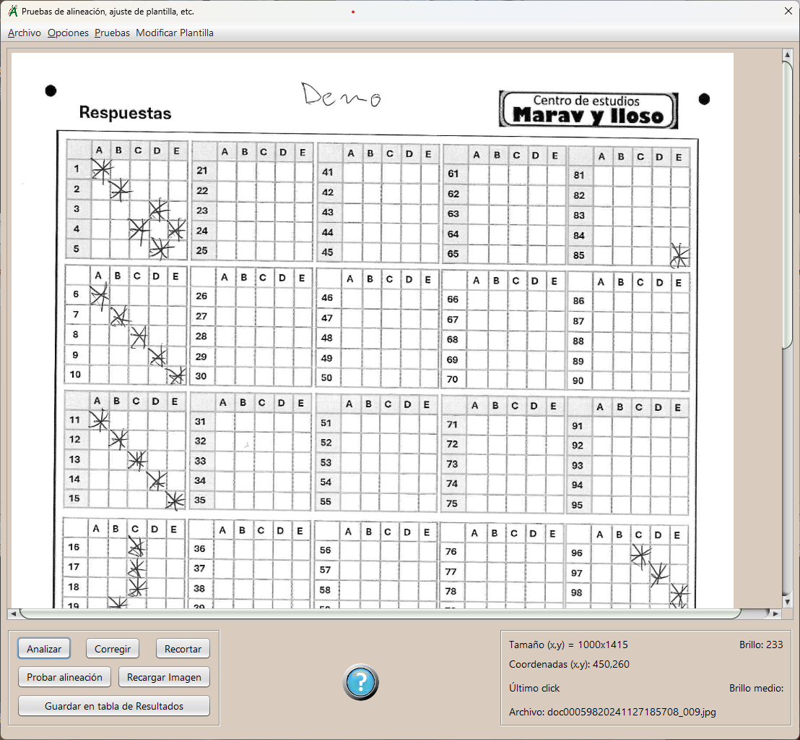

Pruebas de Lectura y Ajustes
Lectura e interpretación de las imágenes de los test. Pruebas y ajustes de la configuración para optimizar la captura.
Si los resultados de la captura de imágenes no son satisfactorios, aquí se pueden hacer pruebas para ajustar la configuración de lectura de hojas.
Opciones del menú:
Archivo- Abrir:
Seleccionamos y abrimos el archivo gráfico que contiene el test con el que queremos probar los ajustes.
- Configuración:
Parámetros de captura de las imágenes de los test. Son los mismos que se mencionan en la pantalla principal.
- Buscar Esquinas:
Busca y pinta la marca de detección de esquinas. Deben localizarse las cuatro; aparece un cuadrado blanco, o parte de él, en cada una. Atajo de teclado: Tecla "E".

- Pintar localización de marcas:
Pinta en la imagen la posición y el área donde se buscarán la marcas de respuestas. Atajo de teclado: Tecla "C".
- Edición activa:
Se practican en la imagen los ajustes según la configuracón vigente y se colocan en la imagen todas las casillas donde se buscarán marcas de respuesta en los test. Después se seleccionarán las casillas deseadas y se podrá cambiar la posición donde se buscarán las marcas, mediante las teclas de cursor o arrastrándolas con el ratón.
- Guardar plantilla:
Esta opción sólo está disponible si la edición está activa. Sirve para guardar la nueva disposición de las casillas de marca de respuesta de la plantilla del test. En adelante se buscarán las marcas de respuesta en esas posiciones.
Panel inferior, botones de acción:
Analizar:
Se practica en la imagen un análisis completo: se ajusta según la configuracón vigente, se buscan
todas las casillas según las coordenadas definidas en la plantilla y se pinta la localización de las marcas resultantes.
Corregir:
Se hacen en la imagen los cambios geométricos y recortes según la configuracón vigente, para comprobar si son correctos.
Probar alineación:
Se practican los ajustes mencionados arriba sobre la imagen y se pintan los recuadros donde se buscarán
las marcas de respuesta. Hace el mismo efecto que la opción de menu "Pintar localización de marcas", pero tras haber hecho los Ajustes
en la imagen; así podemos ver si la alineación es correcta, en caso contrario usaríamos la opción "modicar plantilla"
descrita anteriormente.
Recargar Imagen: Vuelve a cargar la última imagen abierta. Limpia los dibujos y cambios geométricos hechos, es lo mismo que abrir la misma imagen desde el menu "abrir", sirve para facilitar las pruebas.
Guardar en tabla de resultados: Después de analizar una imagen de test, se guarda en la tabla de resultados de la ventana principal, si consideramos que los resultados son correctos. Esto es muy útil si tenemos que modificar la plantilla para leer un test que tiene una imagen demasiado deteriorada y/o queremos corregir los test uno a uno.
Panel de edición de plantilla:
Cuando se está editando la plantilla de test, el panel inferior cambia y pasa a modo de edición.
Para facilitar la edición, según la opción marcada, podemos seleccionar casillas una a una, al paso del
cursor por encima o bien columnas y/o filas enteras. Las opciones se pueden combinar. La selección "al paso" se puede, además, activar/desactivar con
un atajo de teclado, la tecla M.
El botón "Quitar Selección" (atajo de teclado "Q"), de-selecciona todas las casillas.
En el panel inferior derecho tenemos información muy útil para el trabajo de edición y pruebas de la plantilla:
- Tamaño de la imagen.
- Brillo del punto en el que está ahora el ratón.
- Coordenadas de dicho punto.
- Coordenadas del punto donde hizo el último click.
- Brillo medio del área de marca en el punto del último click; es el que se usa para detectar esquinas y marcas.
- Nombre del archivo que contiene la imagen.